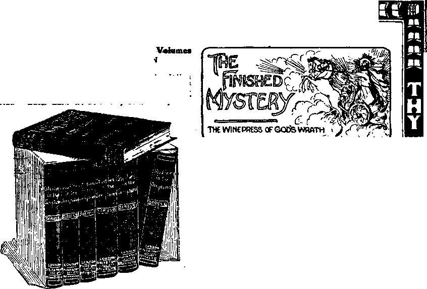

Vol. IX
BROOKLYN, N
N 0. 6
Cthrrtu! Ctlwrhj! Stfarrig!
, Text:—1 ‘ Stand fast, therefore, in the liberty wherewith Christ hath
made us free, and be not entangled again with the
yoke of bondage."—Gal. 5:1,
Although the Christian recognizes his special allegiance to the Heavenly? King and sets his affections chiefly ■upon the heavenly home and feels a hroad kinship with the entire groaning creation of every nation, people, kindred and tongue, he, nevertheless, returning from a visit abroad and passing the Statue of Liberty in New York Harbor, is bound to feel grateful to God for America, and the torch of enlightenment which it has lifted before the masses of humanity.
Let us not go to the unwarranted extreme of some; let us not call this land of the free the Kingdom of God established on earth; but let us on the contrary realize that with all of America’s blessings and enlightenment and advantages everyway for both the poor and the rich, she is far from perfect! Let us, while appreciating our glorious land, and our wonderful blessings therein, rejoice that a still better Government and still more favorable conditions are part of the heavenly promise to the world of mankind! Let us rejoicingly continue to pray to the Lord, “Thy Kingdom come; thy Will be done on earth as it is done in heaven.”
“Let Us Think Soberly.”
8t. Paul urged believers, “Let us think soberly,’? according as God has granted • to each a measure of his gtace. Hence the Christian’s rejoicing is not boastful, but tempered with moderation. He sympathizes with the groaning creation in other parts of the World and does not ignore the faults of his native land, even while he does not unduly magnify and parade them. In all soberness, however, Bartholdi’s statue of Liberty Enlightening the World is true to the facts of the case. He would be blind indeed who failed to recognize the great influences which the principle of liberty established here exercises all over the world. When Liberty was born on these shores, rocked in the cradle of the Revolution, it had not kith nor kin in any part of the world. Europe alone had civilization, but not even it had Liberty. Everywhere the barons ruled and the masses, comparatively ignorant, rejoiced to submit. Liberty and equality and manhood were almost unrecognized.
As Liberty emerged from its cradle a stalwart youth, its influence and example shook Europe and threatened to overthrow it with Revolution as accomplished in France. And when finally better counsels prevailed, aristocracy realized that its days were numbered, unless concessions were made to the liberties of the people. It yielded with good grace, with the result that the monarchies of Europe are no longer despotic, but limited, parliamentary; the people have a vote and voice in their own government.
The blessings of liberty came to Europeans so slowly that few of them probably today recognize how very different were the conditions a century ago, and how gradually the change has come about. The most advanced nations of Europe have only quite recently granted suffrage to the people, find, even yet.it is. under limitations.
Nowhere is the'standard of manhood recognized as in this land. All the reforms of Europe of the past century, directly or indirectly, owe their impulse to the example of America. As the sons and daughters of Europe by the thousands and the millions have ccme to these shores they have learned the blessings of liberty and the meaning of manhood. And their letters to their brethren at home, filled with their new conception of human rights, have had a leavening influence upon the bureaucratic and monarchical theories and institutions of the old world. Yes, Bartholdi had it right! Liberty has been enlightening the world during the past century!
God’s Mysterious Ways.
It is not for us to boast, but to think’ soberly. Whence came the light of liberty’s torch? We answer that the spark was divine. In a certain sense and degree this spark and torch were given to Abraham’s natural seed, the Hebrew naTlon, in the Divine Law, at the hand of Moses. Later the antitype of Moses, “Christ, brought life and immortality to light through the Gospel” message. Of our Lord it is written, “He is the true light which llght-eth every man that cometh into the world.” Our assertion, therefore, Ig that whatever blessing there is in the light which shines from Liberty’s torch is the light of the Gospel.
Notice the language of our text, “The liberty wherewith Christ hath made us free.” Of course man, originally made in the Divine likeness, must have had the love of liberty in his very constitution; but thousands of years of experience in slavery to sin and death have considerably crushed out the proper conception of liberty-godlike liberty. It is to these sinners or perverts from the Divine likeness that the Lord Jesus offers the true liberty. Note the effect that this Gospel message had upon the early Church. It made them a “peculiar people.” It broke from them the shackles of superstition'‘which firmly held their fellow men. It gave them higher, broader, deeper views of human rights and human responsibilities. It taught them that all men are sinners and that the King and the peasant, the learned and the ignorant, are all responsible to the one God and that he is no respecter of persons.
As a consequence, Christians came to be generally recognized because of the influence of Christ’s message of liberty, which effected their every interest with its enlightening influences. We read that the people took knowledge of them that they had been with Jesus and had learned of him. They learned of Jesus no lessons of anarchy or strife, but those which taught the proper relationship between man and man. They were also taught to live peaceably, to endure, to suffer, to wait for justice until God’s time would come; when, at the Second Advent of Christ, his Kingdom would be established and “justice would be laid to the line and righteousness to the plummet.” Of the Apostles we remember that it is written that the rul&rs were astonished at their courage in standing up for principle in faithfulness to the TMvinA ‘W’nrrl ThowmarTnlarl €» + annh courage Th men whom they perceived to be “ignorant and unlearned.” The fact is that having learned in the School of Christ the real principles of righteousness and the relationship of the things of the present time to the things eternal—these were transformed men, whose balance of mind, of judgment, was in accord with their knowledge—lessons in the School of Christ.
A Great Falling Away.
St. Paul, and indeed all of the apostles, prophetically declared that before the Second Coming of Christ a great falling away would occur in the Church, which would affect the whole world. These declarations came true in the period known as the “dark ages,” when the Word of God was inaccessible to the people and when the teachers of the Church turned aside from waiting for the Son of God to establish the Millennial Kingdom, and codabored with earthly princes to use the name of Christ interwoven with Ignorance and superstition and a chain of slavery, whereby the people would, be restrained of their religious liber-( ties, in order that they might not ap-( predate their political liberties. The School of Christ and its enlightening power belong by right merely to the fully consecrated, “The sanctified in Christ Jesus.” But others, their relatives, neighbors and friends in large numbers partook of the spirit of liberty without accepting the spirit of conse-oration. The result of this spirit under present conditions, it may easily be seen, would be anarchy. Hence the princes, kings and emperors were glad to have the ministers of Christ come to their aid in binding and re* straining the people. Nevertheless^ nothing has occurred that God did not foresee, and that he is not able to overrule eventually for the advantage the blessing of such as are truly his.
Lifting ths Veil.
Evolutionists tell us that the liberty and attendant blessings of our day, are because of Evolution; but they do not explain why or how Evolution should so suddenly lift the veil of ignorance and superstition from the race; why it should so suddenly bring to us the blessings of invention, skill through machinery ministering to our comforts in ten thousand ways undreamed of a generation ago.
The Bible answer to the question Is that God’s due time has come, and therefore these blessings, which are a part of and leading up to the Millennial Age conditions, are ours. The great clock of the Universe, under Divine regulation, has been keeping perfect time. At the proper stroke of the hour ;ne Jewish Age began, at the death of Jacob, in the close of the Patriarchal Age. Again, at the proper stroke of the hour the Gospel Age began, at the close of the Jewish Age, at the death and resurrection of Jesus. And now likewise at the dawning of the Millennial Age and the close of the Gospel Age—coming exactly on .time,
THE CALL DIVINE
To-day, to-morrow, evermore,
Through cheerless nights without a Star, Not asking whither or how far, Rejoicing though the way be sore, Take up thy cross And follow Me!
I cannot promise wealth or ease,
Fame, pleasure, length of days, esteem— These things are vainer than they seem— If thou canst turn from all of these, Take up thy cross And follow Me! ail Ute events properly connected and rightly understood show that our great Creator is w’orking all things accord-, Ing to the counsel of his own will and' that the world’s present experiences are wholly of Divine prearrangement.
Looking from this standpoint, we no-tlce that in Divine providence Americas was hidden from the world until God’s due time for its discovery. It was opened for settlement at a time wheal religious persecution was rife in Europe, when a man had no liberty event ■ to think for himself—no liberty to wor-' ship his God according to the dictates! of his own conscience. It was under) Divine providence, doubtless, that the> Pilgrim fathers reached these shores!: and cast their influence with that of| others in bringing forth the child of; Liberty. In God’s providence variousi religious sentiments were at that time) so evenly balanced that all of the col-! onies gladly arranged for religious) freedom, which really meant a higher; standard, a more Christi ike standard than had been known in the world/ since the days of the apostles. It iar this spirit of Liberty in which there! has mingled a considerable measure of$ the light of the cross, the light of the world, that has brought the bless* ing and enlightening effect upon thia land and upon the world; and with it, in God’s providence, has come a mental enlightenment born partly of that liberty and partly of avarice.
What Will the Harvest Bei
God has not granted us prophetic vision whereby to declare the future of this goodly land, which has had so much of his blessing thus far; yet he does in the Scriptures portray in a general way what we may expect. And, alas, it is a sad picture from one standpoint. The Scriptures show a very dark cloud overhanging liberty and the world. But, thank God, they show a silver lining to that cloud to those who have the eyes to see it—the spiritual perception. The Bible teaches us that the inventions of our day and Its enlightenment will, under the operation of avarice, prove to be the upper and the nether millstones which will crush humanity terribly.
How can these things come about, do you ask? We reply that the inventions of our day, which are bringing so many blessings to the whole people at so little cost, are gradually drifting into “strong hands,” the hands of trusts and capital. Some of these, indeed, have been and are yet blessings, helpful In many ways. Yet the concentration of power into the hands of a few is too strong a temptation to be long resisted. The day is not distant when the leverage will be used gradually to draw the coveted wealth more and more to the coffers of the trusts.
Meantime liberty and enlightenment have been doing more than merely glv* ing us mechanical inventions and helpful. contrivances and comforts. They have given us thought, intelligence, compulsory education, breadth jof mind
I promise only perfect peace,
Sweet peace that lives through years of strife,
Eternal love, immortal life,
And rest when all these wanderings cease.
Take up thy cross And follow Me!
My yoke is easy—put it on;
My burden very light to bear.
Who shareth this, my crown shall share—
The present cross insures the crown.
Take up thy cross And follow Me!
t B; S. A.. POlishM.
13, 15, 17 Hicks St., Brooklyn, N. Y.
Monthly— 12c. a-year. Single copies, le.’
An fridepdhddht, UhsSctarian ligious Newspaper, Specially Devoted to the Forwarding of the Laymen’s Home Missionary Movement for the Glory of God and Good of Humanity.
Ministers of the I. B. S. A. render their services at funerals free of charge. They also invite correspondence fronr those? desiring Christian counsel.
"general information. They have Mfted the poor man out of the dunghill arid have given him thought, and have recognized his liberties and rights theoretically, even more than he has yet realized them actually. The masses cannot be said to be asleep and needing to be awakened? They are awake, as evidenced by their thorough organization, extending to every avenue of business. But although awake the giant has not learned his power. He knows not how to co-ordinate his forces and to use them at the polls.
We cannot doubt that men will learn this lesson very soon. Then will come the time of trouble, when the giant, Labor, will strike against his master, Capital, and when the wonderful resources of both will be used with frenzy. The result will be what the Scriptures graphically portray as a “Time of trouble such as never was Since there was a nation” (Daniel xii, 3).
Will Not God interpose?
Yes, we answer, God will interfere, but not in the time and manner, nor fbr the purpose generally expected. The same great Creator who through the past has supervised, and who latterly has caused the development of Liberty and the preparation - of the mechanical arrangements for the Millennial Age—this same God has purposed the time of trouble which he declares, and which we understand is High, even at the door. He purposes ft because through it better than in any other manner the world can be taught great lessons and be prepared for the Millennial Kingdom of Christ. In that time of trouble, according to the Scriptures, the rich, the proud, the great, the mighty, shall weep bitterly dnd have sore distress. Likewise the
DO YOU KNOW?
MATTERS OF INTEREST AND IMPORTANCE TO ALL THINKING PEOPLE, ESPECIALLY TO CHRISTIANS
DO YOU KNOW that the Millennial ual or heavenly reward ?—to be “made
age was specially preached about by partakers of the divine nature” (2 Pet. the Apostles as “The Day of Christ.” 1:4), and to share with Christ the work **The Kingdom of God,” etc. ?—and that of blessing the world during the Millen-it was the earnest faith of fhe early’ nium, but that the Lord’s provision for
Church ?— Phil. 1:6; Mark 1:14.
DO YOU KNOW of the Apostle-Reter’s reference to it, in Acts 3:19, 21, where he calls it “the times of restitution of all things which God hath spoken by the mouth of all the holy prophets”?
DO YOU KNOW that St. Peter, there declares that these times of blessing will not precede, but will follow, the Second Coming of our Lord Jesus?
DO YOU KNOW that the prophecies , Snd signs which now herald the second advent of Christ are much more distinct than were those signs and prophecies which marked his first advent?
DO YOU KNOW that the driving of the Jews out of all nations and the resettlement of many of them in Palestine, now in progress, is another sign of the close of the Gospel age and the dawn of the Millennium?—Jer. 16:15; Rom. 11:25-32.
DO YOU KNOW that the Second Coming of Christ will be as different from human expectation as was his first advent? and that his day will come upon the world unawares—that they will be “in his days” and that only the wise will know it?
DO YOU KNOW that the object of the Second Coming of Christ, as well as its manner, is generally misunderstood? that his coming, according to the Scriptures, means the blessing of all the families of the earth?
DO YOU KNOW that the Church which God is electing or selecting dur-
T&, the Word' of Gb^ declare# tW raere shall be* rio' peririb tb dnyone—1 the trouble will be gehctfaL there Will be no Way of escape from it The Scriptures ita>iy tha’t iri that time of trouble the tfTch; and the great will receive a lessbn* likewise the masse® a different lesson—but both1 evidently to their mutual advantage;
The Silver Lining.
Thank God, the Scriptures give usf a view of the silver lining behind the clouds of trouble; assuring us that at Its conclusion the Whole World Will1 Have learned a most valuable lesson in the furnace of its affliction. Both parties to the strife, humbled by their utter failure, will be ready to acknowledge Messiah King of kings and Lord of lords. Many nations shall go and say, “Come, let us go up to the mountain of the Lord, to the house of the God of Jacob; and he will teach us of his ways, and we will walk in his paths; for out of Zion shall go forth the Law, and the Word of the Lord from Jerusalem” (Isaiah ii, 3). Of the glories and blessings of that Millennial day the prophecies of old are replete With testimony. But the chief bless-* ing then to be brought to mankind under the reign of Messiah’s Kingdom will be the knowledge of the glory of the Lord. All men shall come to ap- . preciate the Divine character and its principles of Righteousness—Justice, Love, Wisdom and Power—that all men might,^after experiencing the bitter and the sweet, the evil and the good, know how thereafter to choose the good, in harmony with the Divine Law, and, by obedience, come to everlasting life and joy and blessing. It is of that happy time, we remember, that St. Peter assures us, saying, “Times of refreshing shall come from the presence of the Lord; and he shall send Jesus Christ, which before was preached unto you; whom the heaven must receive until the times of restitution of all things, which God hath spoken by the mouth of all his holy prophets since the world began.” The Apostle additionally informs us that whoever will not accept the righteous regulations of that government shall perish in the Second Death; “And it shall come to pass that every soul' which Will not hear that prophet shall be destroyed from among the people” (Acts til, 10-23).
1:4), and to share with Christ the work those who accept his grace during the Millennial age is a restitution .or restoration of the perfections of human nature (lost by sin), in Paradise restored —the new earth?—Acts 3:19-21; Rev. 21:1-4.
DO YOU KNOW that the Day of Judgment will be a thousand-year-day, and not a twenty-four-hour-day ?—and that the word judgment implies, not merely a sentence, but also
a trial?—II.
Pet. 3 :8.
- DO YOU KNOW that during the world’s great day of trial or judgment (the Millennium) the Church now being selected from among men will be, with Christ, the Judges of the world? (I. Cor. 6:2)—that to prepare them for that service they themselves are now severely tried in all points, that they may be able to sympathize with those whom they will then judge?—and that they shall be kings and priests of God and, as Abraham’s Seed, bless all the families of the earth?—Rev. 20:4; Gal. 3:16, 29; Gen. 22:18.
DO YOU KNOW that these and many other vital and interesting questions of the present day, are being considered scripturally in the weekly sermons by Pastor 'Russell?
DO YOU KNOW that Pastor Russell’s sermons are being published in many of the leading newspapers of the United States and Canada, and thus the light of “present truth” (2 Pet. 1:12) is spreading? Copies of sermons published in this paper, can be obtained free.
of Up? Ag?
fo l^anwt Wie
"The harvest is the end of the age,"—Matt, 13:3g.
the patfable of which our text is a part _ the place of the Old House of serv-
had no such thought in mind. The parable deals, not with the Church individually, but collectively. It points out that our Lord, the Son of Man, was a seed-sower and that the field in which he sowed the seed was the world. His personal seed-sowing of the Gospel message was accomplished more than eighteen centuries ago, but since then from his glorious presence ■ at the Father’s right hand on the throne of glory he has been represented by his followers, who, imbued with his spirit, have gladly laid down their lives in the same work of scattering the good tidings of the Kingdom.
It is true also that our Lord did a
his dis-“I sent ye be-plowed, entered
. guile.” These were gathered to the garner or barn of Divine favor or protection by the baptism of the holy Spirit, which came upon the leaders at Pentecost and subsequently extended to every one of us, to every. Israelite indeed, anointing these with the holy Spirit.
The threshing, the winnowing and gathering into the barn continued during the entire harvest period and ended in the year A. D. 70, when the Roman army completely destroyed Jerusalem and every vestige of Jewish polity. Thus was fulfilled John’s prediction, “He shall baptize you with the holy Spirit [Israelites indeed beginning at Pentecost] and [the remain-
Christian people have forgotten and Worldly people never knew the significance of pur text. We are all familiar with the beautiful hymn which inquires, “What will the harvest be?” and which gives the' suggestion that in each life-experience there is a sowing and a reaping. This is true and we will examine this phase Of the sub'-ject by a*d by; but first we call your attention to the' fact that our Lord in reaping work and associated ciples .with himself, saying, you to reap that whereon stowed no labor [other men harrowed, sowed], and ye are into their labors,” as reapers of the fruitage of other toil. The truthfulness of this is manifest and is corroborated by the statement of John the Baptist, who declared of our Lord that he was the Reaper of the Jewish Age whose fan was in his hand, and who did purge the threshing floor, and did gather the wheat into the barn and burned up the chaff with unquenchable fire. (Matt. 3:12.) Looking back over Jewish history we see that the harvesting of the Jewish Age began with our Lord’s first advent and ended forty years later at the destruction of Jerusalem. In that time he gathered all the wheat of that nation, all who were ready for the Kingdom. (John 1:12.) These were comparatively a “little flock.” They were all “Israelites indeed in whom was no der] with fire.” All not baptised with the holy Spirit, all not adopted thus into the family of God, received their share in the baptism of fire, trouble* which came upon that nation, and to it the Apostle refers saying, Wrath to the uttermost is come upon this people, that all things written in the Law and prophets concerning them should be fulfilled. — 1 Thess. 2:16; Matt. 5:17,18.
A DOUBLE WORK PROGRESSING.
From the foregoing it will be perceived that during the harvest period of the Jewislj Age a two-fold work progressed—the harvest of the Jewish Age preparatory work for the Gospel Age, a reaping work and ® settling time as respecting the Jews an# their covenant relationship to God and. simultaneously the opening of the new dispensation, in which the middle^ Wall of partition between Jews and Gentiles was in due course broken down arid all who received Christ, whether Jew or Gentile, bond or free, were accepted of the Lord as members of the New House of sons, which took ants—“Moses verily was faithful as a servant over all his house [of servants], but Christ as a son over his own house [of sons], whose house are we if we hold fast.”—Heb. 3:5, 6.
tTHE RICH MAN IN HELL*
Lazarus in Abraham’s Bosom
An interesting sermon on above subject
Send post-card for free sample.
tTHIEVES IN PARADISEt
*paradise,”
‘Verily I say unto thee, today, shalt thou be with me in
The parable of the wheat and the tares, to which our text belongs, was a brief statement by our Ldrd of his work in the world during this Gospel Age. The foundation of it he laid im his redemptive work, tlje work itself properly began with the bestowmerit of the holy Spirit of Pentecost. Our Lord declares that he sowed the good seed of the Kingdom. In harmony with this we find that he continually taught his disciples that the Jews were right in their expectation of the establishment of God’s Kingdom amongst men for the overthrow of sin and Satart, and for the deliverance and uplift of Adam and his race. But he instructed them that his Kingdom was not of this world, not an earthly kingdom, and that his servants were not to fight with weapons of carnal warfare for the establishment of his Kingdom. It would be established at his second coming in power and great glory. It would have all power and to it every knee would bow, every tongue confess. It would not oppress, but would bless its subjects and fully restrain it® enemies and ultimately destroy the impenitent.
THY KINGDOM COME ON EARTH.
Thus he taught his disciples, and usr through them, to pray for the coming Kingdom as the Divine boon and blessing most desirable. He said, "Pray ye, Thy Kingdom come, thy will be done on earth as it is done in
(Matt. 6:10.) That King-
heaven;
dom was associated with nearly all of his promises to his disciples., As th® young nobleman he would go to a far country and in due time would return and reckon with his servants and reward them according to their loving loyalty and energy in his service. Tn his Kingdom, some of his glorified servants would be granted dominion over two cities, some over five, some over ten and thus all would be jointheirs with him in his Kingdom, sharers of his throne, partakers in his great work of uplifting Adam and. his race out of their present fallen conditions, mental, moral and physical.—
, Luke 19:12.
\ Not only does the parable which we are discussing refer to the Kingdom, out prictically every parable whlclt dutf Lord uttered was given to teach. Something respecting the character of the Kingdom—when it would come, or something respecting the character and experiences of those who were invited to share that Kingdom with their Redeemer—the “called, chosen, faithful,” who will make their calling and.-election sure to a participation in the Kingdom honors, privileges and blessings. Some of these parables show this Kingdom class, the Church, as a nominal system containing good and bad, faithful and unfaithful, saints and imposters; as, for instance, the
JHTO Ht® LIKENESS
Buff wbt all, with apou facet' beholding as in at glass, the glcwy eff: rity > 1°-*° qy*"?.from, glte)?
( tn® 3^m*@ntttoLoM.-‘-3rCor. 3*18.
Sometime—dear hands shall clasp our own once-mote,.
And hearts that touched our hearts long years before Shall come, to meet us in the morning land;
’*■And then, at last, our souls shall under- stand
Yig WbW, though he hid his meaning from our sight, , God was always true and always right; (
And how, though smiles were often changed for tears* 1 f Along this tangled pathway of the years, Yet only so these lives of yours and mine Have caught the likeness of the Life divine;
—-Alton.
For now we see through a glass, darkly; but then face to face: now I know in part; but then shall I know even as also I am known.—1 Cor.l3:12.
V ' ..........—=^...... rr.-
parable of the het Which, cast into the sea, gathered both suitable and unsuitable fish throughout this age, though the separation was not due to be accomplished until the end of this age. Similarly the parable we are discussing shows two classes in the Church, one, the “wheat” class, begotten of the holy Spirit, the other, the “tare” or imitation class, not begotten of the Spirit of the Lord, but rather of the wrong spirit, the spirit of the world.
AN ENEMY DID THIS.
Our parable shows that the Lord and his faithful disciples sowed the good seed of Kingdom promises, but that subsequently our enemy, Satan, over-sowed the field with treacherous and false doctrines. As the true doctrines bring forth the true “wheat” class suitable for the Kingdom, and false doctrines produce wrong characters, “tares,” which today all over Christendom are so that tile true wheat are being choked out. Indeed, so accustomed is the world to the high look of the “tare” class that the humble “wheat” are thought peculiar and a strange party of undesirables. So closely intertwined are the roots of the two classes that the great Reaper decided that there would be no separation between them until the harvest or end of this age; because to disturb such close relationship in life ■would create a great commotion, such a time of trouble as would wreck pres-'■ ent institutions; hence the Lord’s decision was, “Let both grow together -until the harvest; the harvest is the end of the age.” At what time the great commotion incidental to the complete separation of the small harvest of* wheat from the; great harvest of tares would be due and the great time of trouble incidental to the separation would find its proper place in connection with the proper judgments with which this age will end and the proper plowing experiences of trouble with which the new dispensation will be inaugurated.
WE ARE NOW IN THE HARVEST TIME.
the trust movement
churches,
Dear friends, in two of the volumes of the “Scripture Studies,” which many of you possess and I trust are studying, we have presented from the Scriptures the evidence that the harvest of this Gospel Age is forty years in length and. that aireddy considerable more than one half of it is in the past. We have pointed out that this is the meaning and the true interpre-. taiion of the peculiar conditions, favorable and. unfavorable, which now surround the pathway of. all of the Lord's people. This is the explanation of the federation movement among the among the wealthy and of the union movement amongst the masses. The awfUl time of trouble which shortly as a plowshare will prepare mankind for the new dispensation, the Millennial Kingdom of Christ and his Church, is even now casting its shadow before. Already our Lord’s prediction of it is being realized, “Men’s hearts are failing them for fear and for looking after those things which are coming upon the earth.” (Luke 21:26.) The courageous are saying, “Peace and safety,” but the Scriptures declare that the consummation of the age is upon us and that nothing can avert it; that the destruction will come with suddenness, “as pangs upon a mother,” with brief respites between, but gradually increasing in intensity until the new dispensation, the Kingdom off God’s dear Son, shall be -born in the morning of the new day—“The Sun of Righteousness shall rise with heating in his beams.”
Iff we are right, the present is the time for God’s people to draw very near to the Lord* to come under the shadow of the Almighty, to put their trust more and more in him and to purge themselves from all filthiness of the flesh and of the spirit, perfecting holiness in the reverence of the Lord (2 Cor. 7:1.) As the harvest of the Jewish Age brought fresh tests to nominal Israel, so. the present harvest period will surely bring fresh tests to nominal Spiritual Israel, tests which only the faithful, the saintly, will be able to stand. The fiery trials of this day will try every man’s faith and work? of what sort they aye. Only the gold, silver and precious stones of Divine truth and faith and character will survive these tests. The wood, hay and stubble character, like the tares of our text-parable, will succumb to the fiery trials of this great and notable day of the Lord, toward which the eyes of the prophets of God and of our Lord and of his apostles all looked —the day of which they all made mention.
Now is the time for the fulfilment of Malachi 3:16, when They that feared the Lord [that reverenced him] spake often one to another [conferred respecting his promises and sought to be helpful to each other] a>d a book of remembrance was written for these and to them was given the assurance they shall be mine, saith the Lord, in the day when I come to make up my jewels. It is pertinent to our topic that we inquire one of another respecting our preparation for the evil day into which we are entering. Have we on the whole armour of God; are we standing firmly ourselves and helping the brethren to stand firmly against the wiles of the Adversary, our common foe; have We on the wedding garment of Christ’s righteousness, faith in his blood? Are
we seeking to keep it free from spot
and wrinkle or any such thing? Are we distressed by any imperfection, spot or wrinkle, so that we go at once to the throne of heavenly grace there to obtain mercy and cleansing and to need’trWhile kebSfig^n memor^the never shown to others, nor ever really f‘My"strength*is mao® penecr m year negd?fl While keepmgin memory the . expected thftt @thers would show to him. weakness;w and again, unto me. foregoing, as t e proper nterpretatpn Whether he succumbs to financial dis- all ye that labor and are heavy larierii,«sa °f our. Lord s parable. let us eolabor 3^^ or |O immorality, or to narcotic I will give you rest. Take my yoke upon stimulants, or to disease, it matters not jwtt and. learn ©f me; for 1 am meek aadl which, the- batai of Gilead for the lowly of< heart,, and ye shall find rest tnrto wounded soul is Lpve. your soufe.”—Matt. H:2&-30.
Sometimes this love comes from the Ah! but it require® to believe to partner of life, the wife or the husband; sometimes from parents or children, sisters or brothers. Thank God for these
with the great Reaper to the extent or our ability under his promise, “He that reape th receiveth wages and gathereth fruit unto eternal life.”— John 4:36.
WHAT A MAN SOWETH HE
REAPETH.
closing we note the fact that has our Lord been sowing reaping the harvest of this
Before not only and now age and preparing for the greater sowing and reaping of the Millennial Age, but that each of us, and indeed all mankind, outside as well inside the Church of Christ, does a sowing and a reaping work in respect to his own life and interests. The beginning of all of our sowing is in the mind, or, as. the Scriptures would say, in the heart: Out of the heart proceedeth the various good and bad influences which go to make up our characters. What we sow, we will reap in time. If we sow anger, malice, hatred, envy, strife, ambition, vainglory, bitterness, backbitings, evil-surmising we will reap accordingly. What a sad harvest results from such a sowing! How many fold these evils are multiplied to ourselves and to others! And how far-reaching may be the influence of these evil things upon others! They ripen, they go to seed, they are blown by the winds of gossip and suspicion and many are thereby defiled. “What will the harvest be?” Surely the harvest of such a sowing will be with bitterness and tears proportionate to the degree of knowledge enjoyed and sinned against.
It is bad enough, that the world, uninstructed of the Lord, with no ears to hear his counsel, should sow such
al Bilfty would' be ours under surto cumstances: iff our ears have hoards our eyes have seen, something of the glories of Lord, the beauidefi. off Mis character and the fruits of his>: spirit! God fcmfiii^ you gagr,„ that, myr of us should make such a. mistake and thus sow in our hearts, a crop so displeasing to the Lord, and so. injur clous to - ourselves and to others’
On the other hand, the Lord’s- consecrated people, whose hearts- have? been prepared under Divine supervision, have heard the Master’s: word* instructing us. how to sow profitable crops that will prove to be blessings to ourselves and to others and glori-
ous to his name. In his Word he sup- J , _______...
plies the good seed and he gives us should: have every opportunity torr
freely the seeds of meeknesd, gentleness, patience, long-suffering, brotherly-kindness, faith, hope, joy. He who sows these carefully, patiently, perse-Veringly in his heart and who watches day by day, lest the enemy cast in any seed of malice, envy or strife—promptly purging it out and destroying it— what a blessed portion is hisl How beautiful are the flowers of grace and truth as they develop and more and more manifest themselves in looks, in words, in deeds! What a fragrant perfume is exhaled from the heart and life which is thus regulated in harmony with the Divine Word!
Dear friends, let- us make no mistake; let us do no experimenting; let us not think for a moment that our own wisdom is sufficient and that we may set aside the instruction of our Lord and of his apostles. Let us now,
aith Wptlj nf (ttfyrtefsi
__• • That ye being- rooted and grounded in love, may be able to comprehend with all saints, what is,the breadth, and length and depth, and height; and to know
the love of Christ which, pa seth know eledge, that ye might be filled with all the fulness of G odd'—Eph.
The word love is as warming and cneering correspondingly as the words haired and selfishness are cold and discouraging. To some who all their lives have been immersed: in a world of selfish frigidity, the real quality of the word love is disallowed, disputed, claimed not to exist. Nevertheless there is a craving in every human being for love, pure and sincere, even though never expected to be found. This craving of the human heart for love and sympathy increases as the years go by. Inevitable reverses and failures for the majority take the p<aee of anticipated successes. However strong, courageous, or event brutally fierce has been the warrior in. the battle for bread .ami fame and earthly glory, he craves ultimately, in his partial or
"sometimes” and for the evidence they
afford us of some measure of the image of prepared from before the foundation God in humanity. But alas! in a vast -------«*-----------’ *———* '1l1-
majority of cases the failure, the disaster suffered not only shatters hope; but cools friendship and destroys the semblances of love, which were merely emotional or perfunctory or admiration! At such at time the message of the love of God and Christ is balm indeed, if it come to the wounded and discouraged one! And our
thought is that, particularly at this time of the year, such discouragement is apt to be bom in upon large numbers of the human family. With the opening of the New Year, many properly made fresh resolutions to themselves, or to their friends, or to the Lord—to live more noble lives, to be true to their Creator, to themselves, to their companions in life—in general, to all of their interests and obligat ions. But the first month' of the year has witnessed trials, testings, and to many has brought defeat and discouragement.
<^> The interest aroused aiid the great demand* for copies off this* sermon Has been remarkable. A sample copy wrR be mailed to anyone fre®,
fflff rite gmw off Ghiff mil in
» share ft® gibrites off our TfrtfFawrrrarr
wliicii?. gw shortly f® tot fie use£ off Ecmtr for* tire M'esHHig?off aS off tab* fhnn-iliw off the eartxr and” to guide- tfieno and instruct, ttiem 3® to how nmgg root up all. ffiril. WffP.fft;—mallffo.
envy, etc;—-and mus-h saw- freejy thes seeds: of truth and grace,, to ths intend, that the harvest off tile
lit turn: shall see tSxesnt witte
human, perfection aud full. Bestatoriaa;; failing of which they will he utterly? destroyed; in. ttto Seconds Dtedh.—Asto 3:23.
Desirous, dear friends,. thafr ywm with the publishers of cure of my books, “The Divine Flare ot the Ages,”' that* the^ should supply orders- eormn^ through me at absolute cost. This wilt enable all of you to' procure for yourselves and friends this book, of 38® pages, in cloth binding,. postage prepaid, four copies for a dollar or on® copy at the same rate,. 25c, or the same matter in magazine form for 5c per copy. On this book, dear friends,. J receive not one penny of royalty, I merely am solicitous that you have the Divine Plan in a still more orderly presentation than is possible in my weekly sermons—and the latter win be stili more clear to you after the reading off this book, which some have styled” The Bible Key.”
"COME, WEARY AND HEAVY LADEN."
Now is the opportune moment to these? discouraged ones to- hear the voiceofhira that speaketh from heaven, telling themt of his love, sympathy and his wilbngne^i ance. Hearkening obediently to hi® to tto how of vietewy, by the 1®kF»
from defest by the arrival of to-esififiree-marts at the opportwue moment.' The discouraged me to leccgri&e his need of
forthwith receive, the re-enforcqfoeato promised from him who has ^eclared, Itli-v erft/h is modhk in . XEK1PH®’
the world for our eternal torment.' Esws
with whom we are not acquainted, especially in one who has been s^ frequently misrepresented to us as ItovtoS can we assure o-wseSves of his fewf How may we know that he is no® th® cruel: one that has been: pictured to us^ but instead a loving, generous, toad^, faithful friend—a God wto deligftitetlfc not in our trouble, who: rejoiraeth not to iniquity, who rejofceth not in etemaBy tormenting his creatures, nor evfflffi to destroying, them eternally nr the Secoxaf Death, but, conversely, in doing us grod^ in exhibiting towarefe all who will, re* ceive it,, his loving kindness, and ternate mercy, enabling them more and mt®^ to the language of our text, to apprestot® the height and length, Breadth and depth of his love, and who. eventually will have all men saved (recovered'); and' brought to a knowledge- off the Truths, ' and to. obedience and character develop*
ment, to life everlasting in the Paradis® of God? _____
We see the difficulty .of such, and ifr cries aloud to those of us who have learned the way of the Lord more perfectly to let our light shine, to let all the world who are not completely blinded by the Adversary see the true character of our God, and of the Son of God, and the Scriptural presentation of the love and mercy and abundant provision arranged for in the Divine Purpose. What the world needs is to get over its fright respecting the Lord and the future and to see the Love of God, and his gracious provision in Christ. This alone will win the heart, in the proper sense of .the word. Fear may bring torments, but only the Truth can sanctify and happify, fulfil our Redeemer’s prayer, “ Sanctify them through thy Truth; thy Word is Truth.”
character and purpose, which in their there was a nation”—a social, religious, financial and political upheaval—and
The fright that is upon the world came from the Dark Ages, echoed by all the creeds of orthodoxy, breeding in the hearts of men distrust, fear, hatred of God and of the Bible,which is falsely accredited with being the Fountain from which these brackish waters of tradition represented by the Creeds, have been drawn. It is time that every true Christian should take his stand for the right, the Truth, for the Word of God, for the exposition of the falsehoods which have slandered the Almighty character, which have benumbed the zeal of the saints, and have" repelled the weary and the heavy laden as they looked for relief and balm in the direction of their Creator. Is it not time that all ministers of the Gospel announced and manifested their freedom from the creedal mis-statements of the Divine hearts they long ago have rejected? It is well that all such should lift up their voice like a trumpet and give no uncertain sound to the masses of the groaning creation, who are awakening and hunger-
anarchy.
Thank God for the assurances of hh Word that the spasm will be but a brief one; that “A short work will the Lord make with the earth,” and that everything has been prepared for the establishment of the Millennial Kingdom upon the ruins of present systems. It is folly to think of holding the people back and bandaging the eyes of their understanding and to again enslave them with ignor ance and superstition. Thosewho are thus endeavoring to meet the situation show clearly that they do not understand it. The tidal wave of liberty of mind can no more be repressed than the ocean tide can be swept, stayed with a broom. There is just one remedy, the Truth, and a correct understanding of the teachings of the Bible. Whoever fails to receive the Truth fails of everything with respect to the present life. And this applies not only to the world in general, but also to believers, to the entire Church of Christ. The hour degree of faith. The Scriptures declare, trial predicted to come upon the whole “He that cometh unto God must believe 1S,n2w upon .us, and the Apostle
that he is, and that he is a rewarder of .5,er.? declaration is that it must begin them that diligently seek him.” (Heb. ' with the Church of God. The statement 11:6.) This involves a faith in the justice ? ,.^e *roP“et is t hat one thousand will
ing and thirsting for the water of life, which alone their longings,
‘‘THERE IS A WIDENESS
bread and can satisfy
IN GOD’S
MERCY, LIKE THE WIDENESS OF THE SEA.”
.This is the message which we bear to the troubled and discouraged ones. They must take our word for it, until they have time to take up with us a thorough study of the Scriptures, and to demonstrate to themselves that the justice, wisdom, love and power of God are all enlisted on behalf of Adam and his race—to do us good, to save us from our sins and from the dead and dying condition in which we find ourselves, mentally, morally and physically. Nor should it be so difficult to exercise this mind that God should be just and lovfiig towards all. The thought of an angry, vindictive, torture-loving, unloving Creator should be rejected instantly by every rational mind, as being ungodlike, demoniacal. And no doubt this would have been so had it not been that the misconception on the subject, which the Apostle calls the Doctrine of Devils, was imposed upon our minds from our very earliest childhood, and often by those whom we properly loved and whose piety we reverenced, but who were themselves deceived.
11:6.) This involves a faith in the justice or the rropnet is that one thousand will ments of our Creator’s character as of God, that, inviting us, he will not spurn ’ ““* ’T" stand A thousand others cannot appreciate them. Yet, as
us, when we respond to his call. More- . L v ?S u u „ ou®and at ^he Apostle says, even we who know Over,1ft. should anneal to every-reasonable right handj but Jl shall not come now part only, by and by. aft<r exne-
It is high time that more reverential, more loving, theological views were seen by all mankind. It is the lack of this true theology that is driving many away from the Lord and his Word, into vain philosophies and “science falsely so-called”—-
Higher Criticism, Christian Science, Evolution, Theosophy, etc., etc.—1 Tim. 6:20.
The world has discovered that the bonds of ignorance and superstition have been holding it for centuries, and that its eyes of understanding have been so long covered that now they blink in the dazzling light of the dawning Millennial Day. At one bound the so-called scientific world has left the Word of God and leaped into a refined agnosticism, which professes a faith which it .does not possess. The middle class and the lower class of Society are ready to follow their leaders, and this means very shortly what the Scriptures predict, “A great time of trouble, such as never was since High thee." (Psa. 91:7.) The statement of the Apostle, respecting the same time and trial, is, “ Put on the whole armour of God, that ye may be able to stand against the wiles of the devil. . . . Take unto you the whole armour of God, that ye may be able to withstand in the evil day, and, having done all, to stand.” (Eph. 6:11-13.) Not, Who shall fall, but “Who shall be able to stand?” is the question.
LENGTH, BREADTH, HEIGHT, DEPTH.
We are not able to tell the wonderful measures of God s love—nor can others tell them. Indeed, as the Apostle suggests, the privilege of appreciating these measurements is granted only to the “saints,” and to these in proportion to their saintliness. Thus a babe in Christ, though beloved of the Lord and carefully cherished, cannot, as an infantile saint, comprehend these measurements of Divine character. When first he believed in the Lord he saw something of Divine love and mercy, which influenced him and drew him to the exercise of faith and the renouncement of sin. From that standpoint of Justification by Faith he could see more of the Lord, and appreciate more the measurements of his greatness. Then, called and appreciating the call, he bound his heart before the Lord and made a full surrender to him in response to the invitation, “Ibeseech you therefore, brethren, by the mercies of God, that ye present your bodies a living sacrifice, holy, acceptable unto God, which is your reasonable service.” —Rom. 12:1.
Having thus done all in his power and laid himself at the Lord’s feet, he received the begetting of the holy Spirit, not with outward show or demonstration, but with inward grace and the enlightenment of the eyes of his understanding. From this new standpoint of consecration and harmony with the Divine will, he began to see more of the length, more of the breadth, more of the height, more of the depth of God’s love, and hourly, daily, monthly, yearly, if living up to his privileges faithfully, he has been growing in grace, growing in knowledge, growing in opportunity to see these measurements of the Divine character.
Note that this is the very expression of our text and context: the reception by faith of Christ into our hearts, as a rule brought strengthening, mighty strengthening by his Spirit in the innerman, to the new nature. As this Spirit of Christ dwelt or resided in our hearts by faith, it tended to root us and to ground us in his character-likeness, which is the same as that of the Father—Love. Now, then, all this experience makes us able to comprehend with all saints these measure-riencing the resurrection “change” from earthly to heavenly nature, shall see our Lord as he is and then know as we are known. How grand will be this consummation!
So in our text, which applies to the. present life, the Apostle declares that the saints even cannot know the love of Christ, because it “passeth knowledge.” He then gives a further intimation of how this keen appreciation of the glorious character of God comes to his consecrated ones, namely, by their being “filled with the fulness of God.” This means, dear friends, not only the renouncement of sin, and faith in the Lord as our Redeemer and consecration to him, but a filling with his spirit, his mind, his disposition. This, as already stated, is a gradual work, “ Not by might, nor by power, but by my spirit, saith the Lord.” The Lord’s Spirit is one of holiness, not only of separateness from sin, but of opposition to it; not only of sympathy with righteousness, but' of activity on its behalf; not only of putting away from our hearts every sympathy with unfruitful works of darkness, but also the receiving of that spirit which condemns them by daily life and a word fitly spoken; not only by an appreciation of the fruits and graces of God’s Spirit—meekness, gentleness, longsuffering, brotherly kindness, love— but so great an appreciation of them as more and more induces us to stamp these gracious characteristics of Divinity upon our own thoughts and words and deeds.
Thus it is that we become “copies.of God's dear Son,” and “meet for the inheritance of the saints in light.” To these more and more the Father is pleased to grant the opening of the eyes of their understanding, even to appreciation of the things of the Spirit-—“The deep things of God.”
ST. PAUL PRAYED FOR THEM.
The great Apostle not only preached Christ and shunned not to declare the whole counsel of God, but he never once refers to eternal torment or anything akin to it. No, not in all of his writings, which constitute more than one-half of the New Testament Scriptures! The severest penalty that he ever declared was everlasting destruction, the Second Death, from which there is no hope of deliverance. Undoubtedly he was right in this course. On the contrary he preached and wrote not only about the length and breadth and height and depth of the love of Christ, but in the context (verse 14) he tells us that he prayed for the Church, that they might be able to attain such and more of God’s love. Undoubtedly this is the great need of the Church to-day.
Let us all pray for ourselves and tot each other a wider opening of the eyes of our understanding, and a still more full comprehension of the love of God,
Lr
Im
IN TWENTY LANGUAGES ^Greater, doubtless than the combined circulation of the writings of all the Priests and Preachers in North America."—W. T. Ellis, in The Continent. “Intensely interesting, thoroughly logical and practical.”—Brig. Gxn. W. P. Hall, U. S. Army.
THINGS YOU OUGHTTO KNOW AS
THE SATISFACTORY PROOFS THAT
The Bible is a Divine Revelation—reasonable and trustworthy, revealing a systematic Plan full cf Justice, Wisdom and Love. “The Key of Knowledge" of the Scriptures, long lost is found, and gives God’s -faithful people access to the “Hidden Mystery.” — Luke 11:52, Col. 1:26.
The Lord Jesus and His faithful are to be not only priests but kings, and will reign over the earth. This Kingdom is to come at Christ’s Second Advent. God’s Plan is to select and save the Church in the Gospel Age, and to v.se this Church in blessing the world in the Millennium. A “ransom for all” implies an opportunity to all for restitution. The Day of Judgment is 1,000 years long—the world’s trial day. ‘•The narrow way” of self-sacrifice will cease with this Age.
“The highway” of righteousness will be open to all the redeemed race in the Millennium.—Isa. 35:8, 9.
“The kingdoms of this world” are but for an ordained period and must give place to the ‘ Kingdom of Heaven.”
God has permitted evil for six thousand years for a, wise purpose. %
These subjects any many others of deep interest to all of God’s people are discussed fully and in language easy of comprehension in
(In English, German, Swedish, Dano-Norwegian, Italian, French, Greek, Hungarian, Spanish, Polish, Hollandish, Finnish, Arabic, Slovak, Roumanian, Lettish, Ukrainian, Chinese, Japanese and Korean; also Braille, for the blind).
416 PAGES—CLOTH BOUND. 50 CENTS, POSTPAID OR
Vol. VII. “Studies in the Scriptures” Series^
The Exhaustive and Celebrated Works of PASTOR RUSSELL
u
Why Revelation and Ezekiel can now be understood.
What is “the winepress of God’s wrath.”—Rev. 14 :18-20.
How “the vine of the earth” will be crushed.
Why the Catholic and Protestant church systems constitute “Babylon.”
Why Babylon must fall.
Why the great world-war has come, and what will follow it.
Who are the “seven angels” to the churches, and the work of each.—Rev. 1:4, 20.
What is meant by “the Finished Mystery of God.”—Rev. 10 :7.
The meaning of the “fieiy chariot” which will ’separate the true Christians (the Elijah class) from all others.—2 Kings 2 :11.
The great reconstruction that will follow the world’s trouble, and how every seeker after righteousness may be comforted and blessed.
Ordinary Books of the size and style of Pastor Russell’s works regularly retail in book stores at $2.50 each—seven books thus totalling $17.50.
Until the Twelve Million Mark is Reached, the Publishers have arranged to ship to any address, the entire set of seven volume?, in imported maroon cloth binding, gold embossed—together with one year’s subscription to our 16 page semi-monthy Journal, The Watch Tower—
ALL FOR $4.60 DELIVERED. ORDER TODAY.
International Bible Students Assn., Brooklyn, N. Y.
Every verse of Revelation, Ezekiel and Canticles made plain, and a flood of light thrown upon the entire Bible in Pastor Russell’s final legacy to the Christians of earth, entitled
608 PAGES--ILLUSTRATED—CLOTH BOUND, 60 CENTS,
POSTPAID OR DELIVERED BY COLPORTEURS.